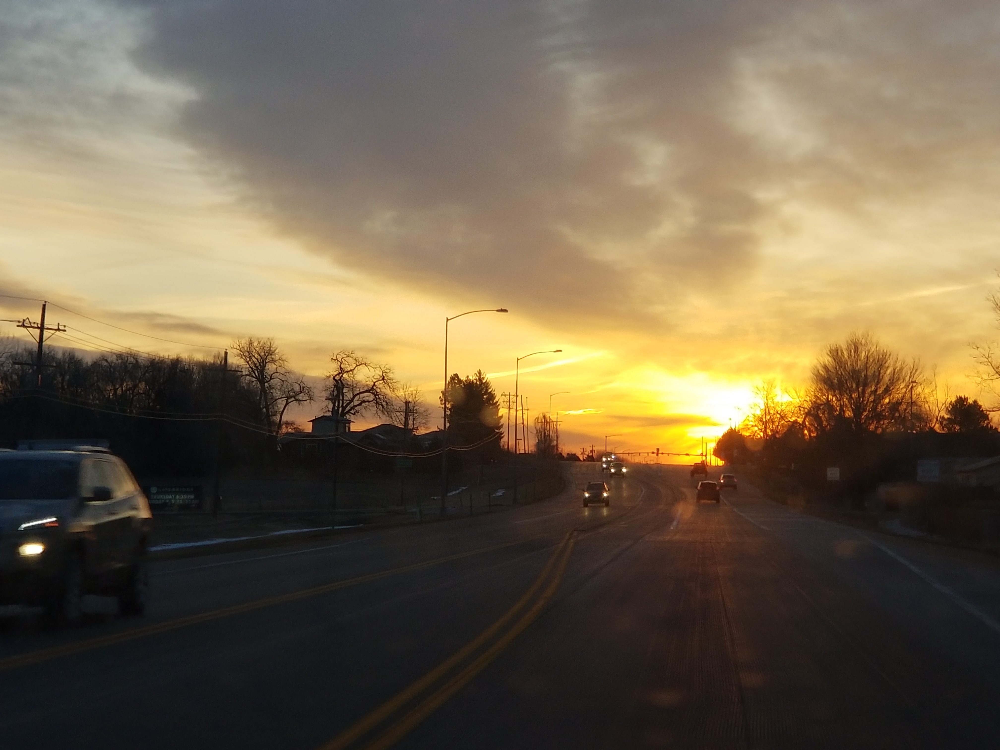
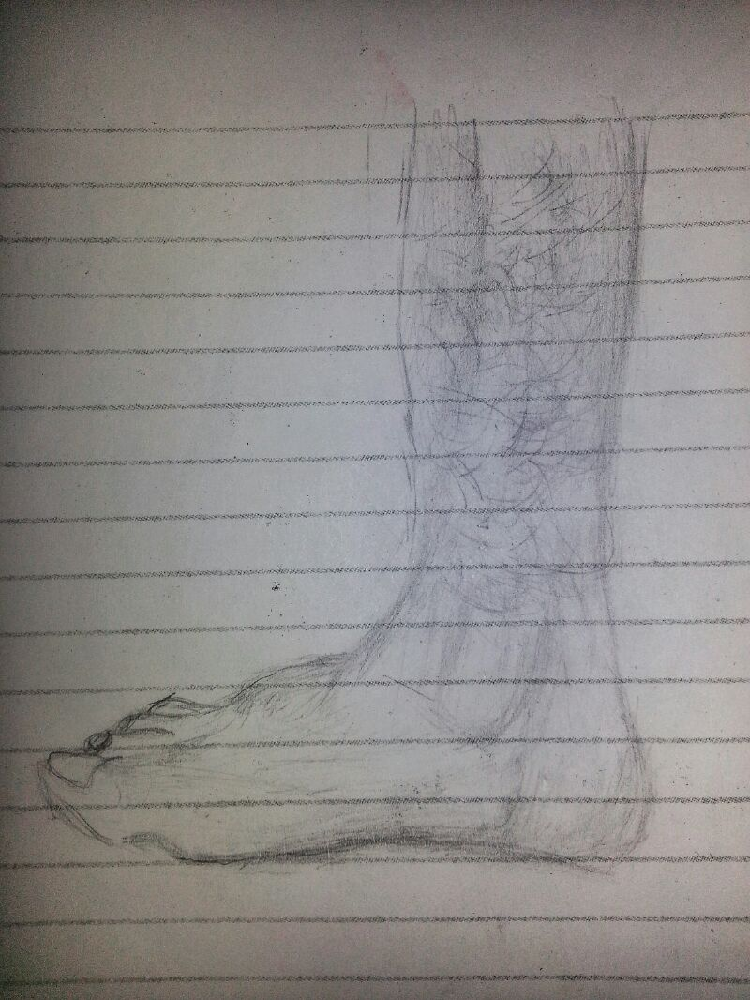
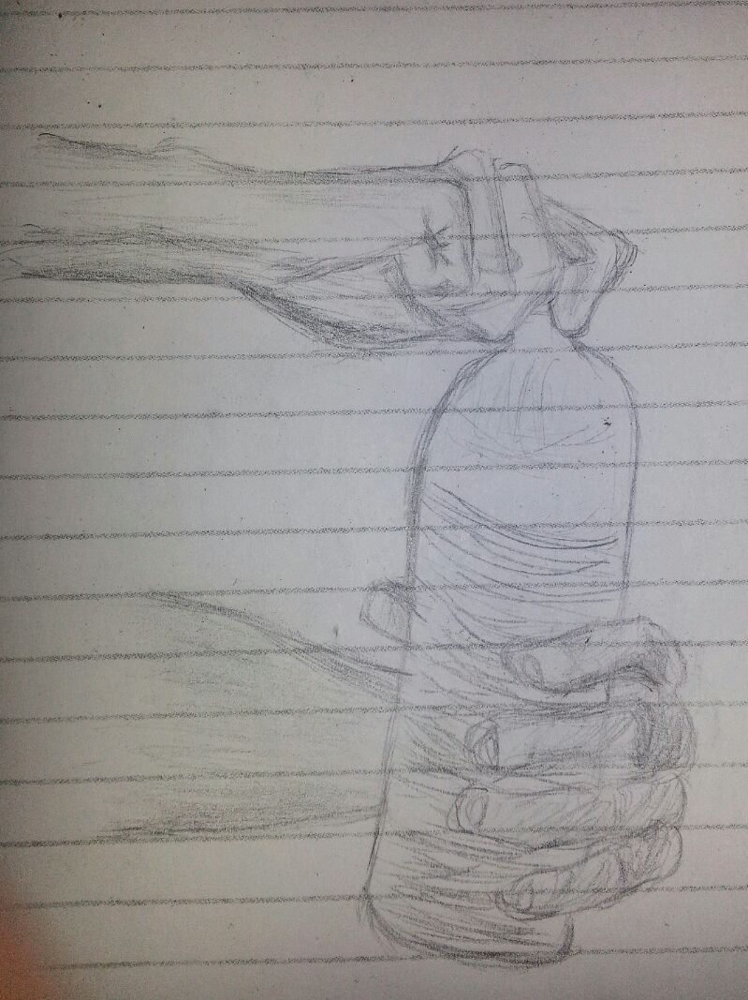
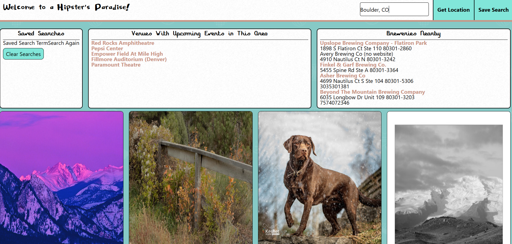
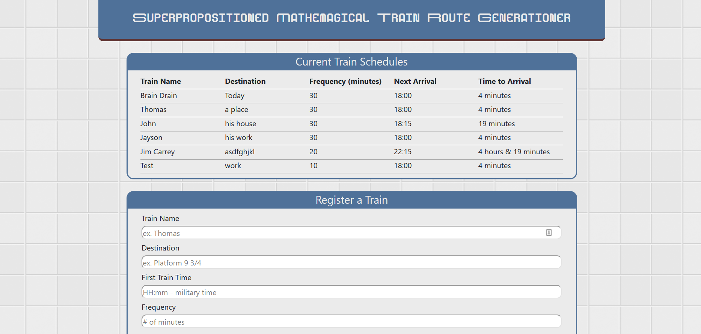
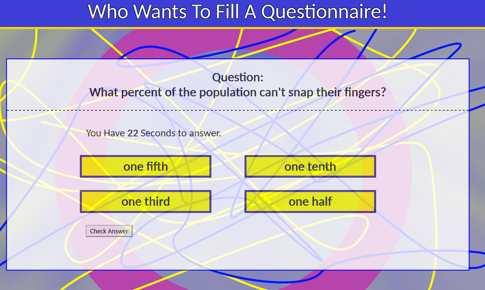
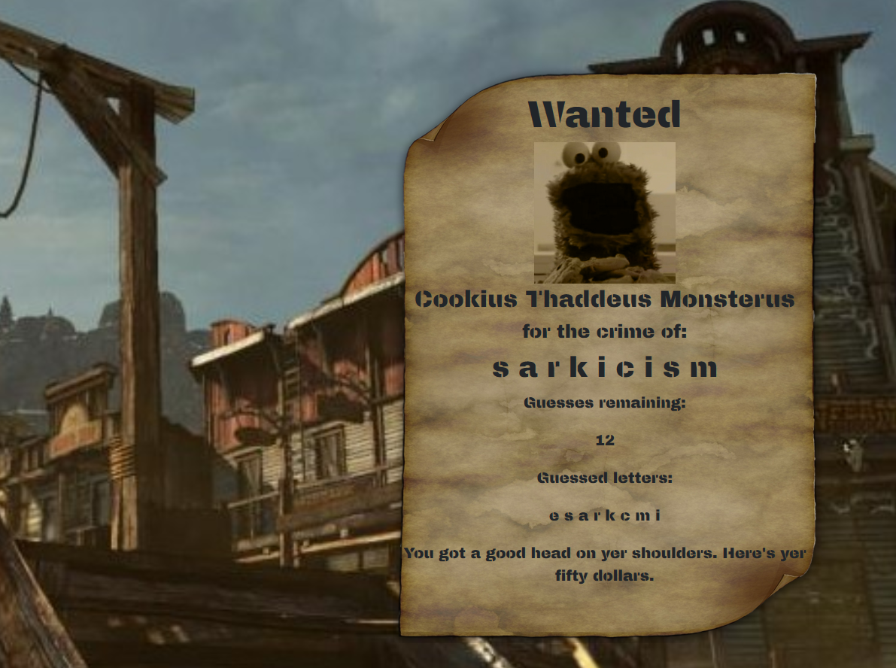
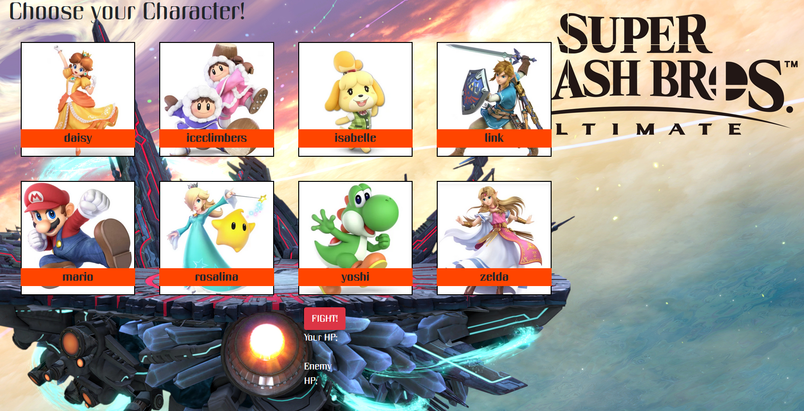

I make stuff.
It's not so easy to define what I do. Okay... It IS, I just did it; but you have to be really vague and unhelpful about it.
This here 'folio is to catalogue all of the things I think are cool enough to show off, and also the other stuff just in case.
I live in Colorado, and close enough to Boulder that I can see the occasional weed clouds waft through the sky.
I've been writing, programming, drawing, and creating for pretty much forever, and I have folders within folders of ideas for projects I've never had the time to get around to.

I absolutely love this scene, it's been my daily drive from work ever since september.


I've doodled in my spare time. I also write stories every so often which you can check out in the deviantart link aaaaaaaaaaall the way down at the bottom of the page.
But that's enough about me, let's get into the projects.
First major project

here's the results of my first major worked on project in javascript.
Using multiple APIs n stuff to search an area and bring up breweries and venues.
the pompously named Hipster's Paradise.
My contribution was mostly the front end and design, the interface the users mostly interact with.
If you want to try it out yourself the repo is here.
Now, for the minor javascript projects let's go from least to most likely to bury me in copyright debt...

This little beaute uses moment.js and some database stuff to calculate train arrival times based on a set of instructions. I did all of it. It was all me.
I did get a bit listener happy and attached too many and forgot to remove them in time so it's initially buggy but all bugs are temporary I assure you.

Here I played around with some DOM manipulation and timing and threw in a few fun facts while I was at it. This stands the test of time as my least buggy solo project to date.
And once again if you'd like to try it out yourself the link is here.

This one is probably my favorite. just because of the themes of western and sesame street. also all me. 100% a me project.
Again if you wish to try it out the link is here.

Have mercy Nintendo it was for a JOKE okay?
ahem...
A little fighty type game that I totally overprogrammed for.
links here.
Blog
oh dear it looks like there's nothing here right now.
Contact Me
shoot me an email: nathanaelsullivan@yahoo.com
find my tweeter: https://twitter.com/Ametueraspirant
facebook I never use: https://www.facebook.com/amet.decrypt
linkedin, linkedout: https://www.linkedin.com/in/ametdecrypt/
deviantart: https://www.deviantart.com/ametueraspirant